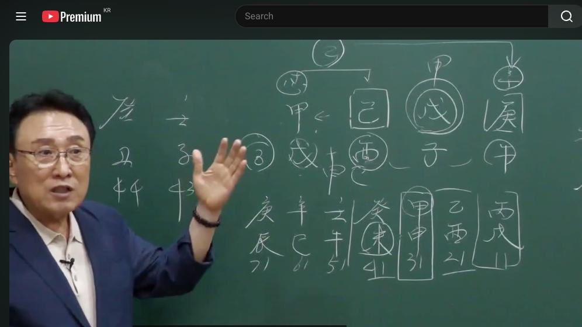

남촌물상TV 전체 문서 › 동영상 V0074
이혼을 하지 않으려면 이것만 알면 가정이 편안하다

| 문서 번호 | V0074 (동영상) |
|---|---|
| 영상 URL | https://www.youtube.com/watch?v=5plm020lMJo |
| 영상 ID | 5plm020lMJo |
| 게시일 | 2024-05-27 |
| 길이 | 34:18 (2058초) |
| 조회수 | 1,961회 (수집 시점 기준) |
| 카테고리 | Howto & Style |
| 자막 | ko (자동생성) |
| 수집 시각 | 2026-08-30 17:03 (KST) |
영상 설명 (YouTube 설명 원문 그대로)
이혼을 하지 않으려면 이것만 알면 가정이 편안하다 #이혼사연 #가정의회복 #결혼시기 #이혼이유
전체 자막 (711구간 · 타임스탬프 클릭 시 해당 장면으로 이동)
[0:00]자 그럼 기토 풀어져 안 풀어져
[0:03]풀어지지 지지의 사가 사유축 되데
[0:06]된다 간단하게 결혼시기를 딱 짚어
[0:12]버려야지 구독 좋아요 자이 밴드에
[0:17]올린 사주를 우리가 기토 시간에 많이
[0:19]설명한 사주입니다 그 어떻게 하면이
[0:23]기토 사주 35세의
[0:25]여자인데 경호 무자 기
[0:28]갑술 자 기토일 란 말
[0:31]기토일주 기토 1주는 작은 땅에 큰
[0:35]나무가 심어지는 경이에 그렇죠 자
[0:38]작은 땅에 나무가 크게
[0:41]심어졌다 자 관이 시 있죠 연하의
[0:45]남자고 관계가 있다 이제 간단히 봤을
[0:48]때 자 그리고
[0:51]본인이 관은 관의 관으로 보면 여기
[0:55]경금이 관이죠 그죠 목의 관 자
[0:59]그러면 관 을 이용을 해서
[1:02]쉽게해서이 사람이 어떤 일을 하고
[1:05]어떻게 하면 가정을 충실하 지킬 수
[1:07]있는가 자 우리 기토 주체가 뭐라
[1:10]했어요 목하고 살려면 첫째
[1:14]어쩐다고 돈을 주지 마라 자 그러면
[1:18]기토일주 국수 물이에요 뭐 관 재물이
[1:22]뭐예요 재물 재물이 물이죠 자수란
[1:26]말이요 자을 재물을 한테 수목을 많이
[1:32]하게 되면이 작은 땅에 큰 나무가
[1:35]성장하면 결과적으로 가정이 깨진다
[1:38]결론 이거 아니었어요 답이 옛날에
[1:42]그러면 이런 사주는 감옥에 뿌리가
[1:46]있을까요 없을까요 없어요 없어요 있지
[1:51]갑목이 있으면은 여기 오화 하고에서
[1:54]인이 인이 붙인다고 생각했죠 호수
[1:58]되죠 갑목이 있는 거예요 그러면 자
[2:00]이 갑목의 남자는 결과 가지고 옷을
[2:04]오화의 남자 바람둥이 남자지
[2:06]간단하지 남
[2:09]남자로서 굉장히 뭔가 겉으로 나타나고
[2:13]화해하는 남자다 이제 이렇게 캐 할
[2:16]수 있는 거예요 자
[2:19]그러면 원국에 봤을 때 이제이 관과
[2:23]본인이 합해 뭘 만드느냐 자
[2:26]목이라는게 만들죠 각기 목이
[2:31]그죠 그럼 제 여기에 을목의
[2:35]관은 결과이 경금 합을 했잖아요
[2:39]을했어 그럼 자 이런 사주 해석할 때
[2:42]여러분들이 잘 이해하실게
[2:44]뭐냐면 각기 합을
[2:47]해서이 여기에 신금이 됐다 자 신금이
[2:51]됐다 얘기 아니에요 자
[2:54]그러면 이런 사람들은
[2:57]거의 여자가 남자한테 돈을 잘주
[3:00]스타일이에요 뭔가 해주고 싶은 생각
[3:02]왜 이제 이렇게 해석을 잘하시 이유이
[3:06]되냐면 간 내 관하고 합분해 내가
[3:09]을목이 됐잖아요 을목이 돼서 내가
[3:11]직업을 겠단 말이에요 자 그러면 나의
[3:14]관의 관이 간법 이거예요 그러면 자
[3:18]내이 관하고 합에서 을목이 돼서 을경
[3:21]합을 신금이 됐단 말이야요 신금이
[3:24]뿌리가 나야 자 그럼 여기 유금
[3:26]아니에요 그러면 자 금의 뿌리가
[3:29]금생수 만들기 때문에 유금을 쓰는
[3:32]행위 직업을 가지고 있구나 하고 금방
[3:34]할 수가 있는
[3:36]거예요 쉽잖아요 어 그래서 네가
[3:40]직업을 뭐 하고 있는데 금방 찾아낼
[3:42]수 있는게 가장 쉬운
[3:45]방법이다 자 그러면 우리가 이제 여러
[3:48]가지 생각을 많이 해 볼 거 아니에요
[3:51]자 여자가 돈을 잘 번 사주 아니냐이
[3:54]사주는 돈 잘 벌까 안 벌까요 잘
[3:56]벌어요 잘 본
[3:58]사주지 잘 본 사주 자 우리 저 상
[4:01]무술이 있으니까 경제 관념이
[4:05]투찰하는 자 여기에이 술토가 술토가
[4:10]변할 때도 있지 아이 철벽 같은 벽이
[4:13]무너질 때도 있다 이걸 생각 여러분
[4:17]하시잖아 신유술이 되게 되면 술토가
[4:21]결과적으로 변하게 돼 있는 거예요
[4:24]그러면 돈이 나가 안 나가 나간다
[4:27]이제이 간단하게 볼 수 있는 거야
[4:29]그래서 이런 사람이 사주를 보실 때
[4:31]어렵게 생각할 필요하다
[4:33]없어요 저체 기토일 주의 특성 굉장히
[4:37]가정적인 스타일이죠 그리 자기 신랑
[4:39]밖에 몰라 굉장히 착실하게 내 가정을
[4:43]지키려고 노력하는 스타일이라고
[4:45]봐야지음 그런데
[4:48]이제에 내 가정을 잘 지키려고 다
[4:51]하다 보면 남편한테 내정 가사이
[4:54]심하고 안 편 갔어 심해요 간섭이
[4:56]심하지 아이고 뭐 너 일찍 오세요 뭐
[5:00]뭐 어쩌요 하는 이러한 관계성을 가질
[5:03]수 있는 기토일
[5:04]주에요 남자도
[5:06]마찬가지 남자도 갑목일주 저 남자
[5:09]여자고 산다 아 당신 차 조심해 어디
[5:12]조심해 자빠짐 안돼 사사건건 소위
[5:15]말이 많지
[5:17]그죠 우리 권선생님 그럴 거야 다 다
[5:20]알아 내가 똑같은 현상이다 그
[5:23]말이에요 그러니까 기토일주 성향이란게
[5:26]그래 우리 저저 어이 선생님저 세
[5:30]선생 기토
[5:32]아니야 남편의 간섭이 심하지 본인이
[5:37]그러니까 내 손안에 소유야 내 손안에
[5:41]소이다이 말이에요 이게 이제 기토일주
[5:43]성향이에요 자요 성향으로 봤을 때
[5:46]우리가 이제 사주 원고를 해석을 다
[5:48]수 있는 거요 자 그럼 지지에는
[5:50]호수의 개념 있잖아요 호수의 개념
[5:53]그럼 자 여기에서 아까 우리가
[5:56]각기에서 목이 금
[6:00]이 말이에요 신금의 뿌리가 이제 여기
[6:02]경 5가 있잖아요 그러니까 노이
[6:05]되니까 아까 관에서 이노수 여까지 간
[6:08]거 아니에요 그러 아름다움을 추구하는
[6:11]직업을 가질 것이다 답이 딱 나오는
[6:13]거야 손 기술로서 아름답게 해주는
[6:17]것이 뭐냐 그 말이에요
[6:20]뭘까요 보통 미용 아름답게 해주는
[6:24]거 또 뭐 네일아트 뭐 이런 거
[6:27]있잖아요 그런 직업을가 수밖 없다는
[6:30]것을 우리가 금방 알 수 있어 그게
[6:32]취업 차이 간단하잖아 그전 우리가 그
[6:35]기토 그 기초반에서 살 때 기토
[6:39]일주가 남편한테 여자가 돈을 많이
[6:43]주면 이혼해 배웠어 한 다 배웠잖아요
[6:46]이제 이런데 여러분들이 하령 하기
[6:48]기초에서 다 쓰라 그 말입니다음 이게
[6:51]특징이에요 자
[6:53]그러면 지지에는 이제 자오묘유 돼
[6:56]있잖아요 자오묘유 돼 있다는 얘기는
[7:02]고전을 얘기할 때 뭐라고 해 도화살이
[7:04]짝 깔려 있네 이렇게 여자가 끼가
[7:06]있네 그렇게 그건 끼는 끼 없는 사람
[7:08]바 보야 다 끼 다 있어 그
[7:12]도화살이란 그 개념을 우리는 잊어야
[7:15]돼 우리 뭘로 부른다고요 자우 요율을
[7:18]어떤 걸로
[7:21]봐요 자 자우 뭘로 봐요 최고의
[7:23]올라간 거야 자 경지 자 떨어질
[7:26]것밖에 없다 우리는 이제 배울 때
[7:29]뭐라 했어요 자 처음 인신사 생지
[7:32]그다음에 자오묘유 왕지 진술축미 묘지
[7:38]배웠는데 왕지는 건 최고의 경지 올라
[7:41]떨어지는 밖에 없는 거예요 그래서
[7:43]항시 위험해 그말 그걸 생각을 해야지
[7:47]자오미 형태라는 것은 건강하고도
[7:49]관계가 있는 거예요 내가 묶이면서
[7:52]자미가 운이 걸리면 이건 수술수가
[7:55]생기는거다 그 말이에요
[7:57]근데이 사주는
[8:00]음을 쓰거나 자수를 쓰거나 오화를
[8:03]쓰면 우리가 제 소위 자를 면한
[8:06]거예요 그러니까이 사람은 요금을
[8:09]쓰면서 아름다운 하니까 자음 전혀 안
[8:13]되지 자음 안 되잖아요 그러니까
[8:15]건강에도 별로 이상이 없어요 이렇게
[8:18]크게 봤을 때 느낀게 우리가 사주
[8:20]보면 금방 눈에 들어와야 돼요 자
[8:23]그래서 핵심을
[8:27]요약하자면
[8:28]기토일주 가 목의 남자고 살게 되면
[8:32]돈을 많이 주게 되면 이혼하게 될
[8:36]것이며 자 그렇지 하면은이 나무가
[8:40]성장하게 되면 여기 큰 무토 땅으로
[8:44]옮겨가고 된다 그 말입니다 격하게
[8:47]된다 그러니까 내 가정을 떠난 거예요
[8:50]그래서 기토일 주의 여자는 남편한테
[8:55]절대 경제적인 조건을 많이 주면 안
[8:57]된다 자 그런데 또 하나 중요한 것은
[9:01]우리가 늘 핵심적인 배울게 있어요
[9:04]뭐냐이 무토 땅 옮겨갈 거 아니에요
[9:08]안 가게 하면 될 거 아니야이 말이야
[9:10]안 가게
[9:11]하면 자 그럼 여기에서 만약에 갑목이
[9:14]심어져 있어 그러면가 자기가가 못가
[9:19]못 가잖아요 오늘 핵심을 새로운
[9:22]관법을 제가 얘기해 준게 이걸 여러분
[9:24]오늘 잘 전수할
[9:26]거예요 자 우리가 옛 기초반 배울
[9:30]때는 돈만 주면 돈만 안 주면 가지
[9:34]괜찮아 배웠단 말이야 근데이 큰 땅이
[9:37]있는 사주 있을 때는이
[9:41]땅에다가 다른 건물을 심어 놓으면 못
[9:44]가잖아 가도가도 못해 나한테 그러니까
[9:48]어떻게이 사주가이 무토가 있어도 옮겨
[9:52]가지를 못하게 만드는 방법이 있다
[9:54]이거예요 이게 우리 물상의
[9:57]비법이 그것을 알아야 된다 그 말 자
[10:00]그러면 잘
[10:02]봐요이 무토의 갑목을 나 심어놨다
[10:05]얘기는이 여자는 뭐예 돈을 벌게
[10:08]되면은 건축물을 사놔야 된 거예요
[10:11]건축물만 가지고 제 앞으로 딱지고
[10:14]있으면 절대 남자는 도망한가이 칼
[10:17]차리가 없는데 차리가 없어 가겠어요
[10:20]못 가지 이게 우리 물상의 또 하나의
[10:23]비법이에요 그래서 이걸 제가 그
[10:26]상담해 여러 사람 거쳐서 검증한 걸가
[10:30]여러분들한테 공개 시키는
[10:32]겁니다음 오늘 오늘 이것만 배워도
[10:35]바꿔만 다 하고 가는 겁니다 충분하게
[10:39]그죠 그래서 기초반에서 우리가 배웠을
[10:42]때 돈을 주지
[10:45]마라 가정을 지키 수 있는 남편
[10:47]관리를 그렇게 해라 이제 이거예요
[10:50]근데 하나 더 이렇게 땅이 있을 때는
[10:52]반드시 가게 돼 있어 근데 여기다가
[10:56]건축물을 그러니까 쉽게 뭔 얘기냐
[10:58]내가 건축물을 크게 갖고 있으면이
[11:02]남자는 도망갈 일이 없지 왜 여자가
[11:07]재물이 크게 뭐 가겠어요 가만안 줘도
[11:09]여자가 돈 주는데 그러 갔어요 도망갈
[11:11]이유가 없지 아 여자가 돈 잘 벌어서
[11:14]남자한테 돈 잘 주는데 도망가 다른
[11:16]여자 도망갈 있어 갈 데가
[11:18]없는데 이렇게 사주를 규명해서 보라
[11:21]그 말입니다 그래서 우리들이 전체
[11:24]이런 사주 흐름을 볼 때 어렵게 생각
[11:27]간단하게 우리 상 뭐 제가 용신 아무
[11:30]필요 없이 특히 기토일주 갖고 오늘
[11:33]설명을 잘합니다 그래서 우리이 선생
[11:35]세봉 선생 기토일 주니까 잘 공부를
[11:38]잘 해서 해 봐 잘
[11:40]배웠는데 자
[11:42]그다음에이 사람은 왜 신유 술이 돼
[11:46]있는 금복이 되냐 그라면 여기에 경금
[11:49]있잖아요 이거 항시 생각해야 돼요 자
[11:53]술과 유가 있다면 가운데가 뭐가 끼야
[11:55]돼 신이 끼야
[11:58]되는데 경금의 뿌리가
[12:01]신금이 신 유술의 개연성을 가지고
[12:04]있다 그러면 자 신이 올 때 여기지네
[12:08]그러면 자이이 갑신 년에 갑신
[12:10]대원에이 사람은 남자한테 뭘 해 주고
[12:14]싶은 생각이
[12:15]있겠어
[12:17]있지 자 그러면 쉽게해서이 짠짠
[12:20]무토가 무너지고 있다 그 말이야 주모
[12:24]좀 넣을래 그 말이야 주모 좀 풀어
[12:25]볼까 이게예요 그러니까 남자 가
[12:29]남자한테 저저 상담하면서 한 얘기가
[12:31]뭐냐면 어 뭘 하나 해 주란다이
[12:33]말이야 어 내 카페 나 찾아주 하나
[12:36]찾아주려고 그 생각하고 있다고 오래
[12:38]오래 해도 될까요 이거예요 물어보는게
[12:42]근데
[12:44]이제이 그 무술의 술토가 철벽같이
[12:49]물을 막을 수가 있어도 있어도 이것이
[12:52]변할 때가 언제냐 돈을 푸냐 안
[12:55]푸냐예요 오늘 두 가지
[12:57]배웠어요 자 도망가지 못하게 는 방법
[13:01]무술이 돈을 푸는 방법 아 술 무술이
[13:05]돈을 풀었을 때 어느 때 풀
[13:06]것인가 그러면 자 사람이 돈을 벌어서
[13:09]우리가 딱 통장에 넣어놓고 있잖아
[13:13]근데 아주 짠 돌이야 아이고 전혀 안
[13:15]해 근데 돈을 풀 때가 와와 이렇게
[13:19]신유술이 될 때 그러면 자 술토가
[13:22]뭘로겠어 건국으로 벗겨 버렸잖아요
[13:25]그러면 이제 풀어지는 거지 복이
[13:27]무너지는 거야 그때 돈을 푼다 그
[13:30]말입니다 이제 이해하셨죠 자 이것을
[13:33]잘 기억하시면 오늘의 모든 상담은
[13:36]거의 다 끝난
[13:37]거야 자 돈을 잘 벌어서 푸는 방법
[13:40]그다음에 내가이 남자가 도망가지
[13:43]못하게 잡는 방법 그 그러면 쉽게
[13:46]해서 기투 성형이 아까 뭐라 그랬어요
[13:47]손바닥안에 있다 내 손에 있어
[13:50]했잖아요 자기가 갖고 놓을 수 있잖아
[13:53]왜 너 도망 못 가니까 내 것인데 또
[13:57]돈은 내가 잘 벌고 있지
[14:00]도망 가라도 안가 왜 수생 목에서 물
[14:02]받아 먹으려니까이 사람이 도망가고
[14:04]싶어도 바짝 말으면 토해요 도망가고
[14:08]싶어도 물을 계속 주는데 도망
[14:10]가겠어요 안
[14:12]가지 뻔한 거지
[14:16]뭐 그러 이제 도망 안 가까지 다
[14:18]배웠어요 그럼 사주 다 봤잖아 뭐
[14:20]사주 어볼 거 뭐
[14:22]있어 간단하지
[14:24]않아요 그래서 이제이
[14:27]사주는음 여러분들이 이제
[14:30]기토일주 각기 합이 돼 있을 때와
[14:32]부토의 관계 이제 이것을 명확하게
[14:35]아시고 지지의 신과 술의 인술이 될
[14:39]때 무술이 있을 때이 벽이 무너질
[14:42]때가 언젠가 그러면 경제적인 자본
[14:45]농기 문을 참고 문을 연다 그
[14:48]말이에요음이 대운에이이 사람은 쉽게
[14:52]신 대운에 잘 벌과 동시에 창고문을
[14:56]열을 수밖에 없다 이렇게 그럼
[14:58]누구한테
[15:00]목한 뭐
[15:03]간단하잖아 대운에서 예측해 준 거야
[15:07]누구한테한테이 사람이 지금 35세
[15:10]하나 말이에요 올해가 무슨 년이에요
[15:12]자 갑진 년이란 말이에요 자 갑진
[15:16]년이면 예상대로
[15:19]예상대로
[15:21]예상대로 내가 신유술 돼서이 창고문을
[15:25]열어라
[15:27]누구한테한테 자 신자진 되니까 물이
[15:30]돼 안 돼요 되죠 신자 신수도 되죠
[15:35]자 그러니까 창고문을 열어 안 뭐어
[15:36]연다 그 누구한테 감목 너 내 남자
[15:40]늘 뭐 하나 찾아줄게 당신 뭐 하고
[15:43]싶어 내 카페 하나 찾아줄까 이렇게
[15:46]된다 그
[15:47]말이에요 그래서 저한테 하는 얘기
[15:49]상당 뭐냐면 제 남편한테 뭐 하나 해
[15:52]줄 건데요 어 해도 될까요
[15:55]이거예요 그걸 물어보자 하는 거야 그
[15:59]정법이 뭐냐이 사람이 오는게 자 기사
[16:03]기사
[16:04]다이죠
[16:06]정법 기사하고 나하고는 뭐예요 감목
[16:10]아니에요 각기 풀어진다 얘기죠
[16:13]풀어지면 내 남편한테 뭔가를 하나
[16:15]자유롭게 내 보내고 싶다는 얘기
[16:16]아니에요 그리고 사유축 유금이 그렇죠
[16:21]돈 벌 수 있는 방법이 뭔가 돈을
[16:23]벌기 위해서 내 남편한테 뭐 하나
[16:25]해주고 싶은 거 그때 물어봤지 않냐
[16:27]이게
[16:28]법이야 근데 별도로 내 장법 왜
[16:30]배우냐고 배울 필요 하나도 없잖아
[16:33]간단하게 너 뭐 때문에 왔지 이거
[16:35]물어오는 거예요 상담 핵심이 그러면
[16:39]사주 다 본 거지 뭘 더 더 더 봐
[16:42]이거 설명해 된 거지 자 거기서 이제
[16:45]한 가지 더 결 건 잘 될까요 야
[16:48]잘될까요 이거 해 주면 우리 남편이
[16:50]잘 될까요 그거 아니니까 그것은
[16:53]다음해로 전개해라 다음회가 뭐예요
[16:56]을사
[16:58]을사 월산 년
[17:00]아니에요 자 그러면 월경 합을 하게
[17:03]되면 신금이 돼 자 그러면 사유축
[17:06]유금이 되잖아요 돈이 생겨 안 생겨
[17:08]생겨 자 그러면 누구로 인해서 관으로
[17:12]인해서 돈도 남자 돈 벌어 안 벌어
[17:14]본다 그 말이에요 그러 자가 오래
[17:17]찾아지면 우리 남편이 돈 잘 벌까요
[17:19]잘 벌지 그 딱 잘라서 큰 소리 빵
[17:22]쳐도 적중률이 100% 딱 맞아요이
[17:26]사람 뭘 차 응까 생각했잖아
[17:29]기 유금 카페 찾아준다 그러잖아요 뭐
[17:32]어렵게 뭐한다 하지 유학 금의 신자진
[17:36]자 올해 진유 학금 아니에요 카페
[17:40]먹는 거 누구한테
[17:43]과목한 뭐 간단하잖아 해주면 이혼할
[17:46]수 있다고 되어 있으면 해주 아까 해
[17:49]그러니까여 이음 수위가 있는데 이거
[17:52]이제
[17:54]알아야지 우리가 모르면 당하지아요
[17:56]근데이 무토에 내가 돈 벌어서는 내
[17:59]건물 딱 하지고 내 명이 가져라 그
[18:01]말이야 여자가 그러니까 여자의
[18:03]건축물만 여자 앞으로 딱지고 있으면이
[18:06]사람은 안 도망간다 그 말이야 내
[18:09]건물에 커피숍 나를보고 해라 아 그
[18:13]커피숍을 남편 명이로 하지 말아라고
[18:14]이런 식 아니 건물만 내가 갖고
[18:18]있으면은 제대로 갖고 있는 거 더
[18:21]이상 한 말 뭐 있어요 그러니까 쉽게
[18:22]얘기해서이 무토에 감옥만 씹어
[18:25]놓으면지가이 차리 올 차리가 없는데
[18:27]어디서 망가 어디로 와
[18:30]그러면 나 우리는 뭐야 너하고 둘이
[18:33]합해서 등락 개업하고 살자 그러면 야
[18:36]빌딩 건물 사 놓고 결과지 그거 세나
[18:39]살아도 되지 않냐 그 얘기 아니에요
[18:42]간단하게 그러니까이 땅을 어떻게
[18:46]활용하느냐에 따라서이 사람 운명이
[18:49]이혼 하느냐 안 하느냐의 차이예요
[18:51]이런 것을 활용해 하게 되면 가장
[18:55]쉽게 사주를 볼 수 있다 그 말이에요
[18:57]모령 하나도 없잖아 다 해결 다
[18:58]했잖아
[18:59]그게 사주 보실
[19:01]때 굳이 어렵게 보지 마시고 그리고
[19:05]이제 여기에 이제 을사 아지 봐
[19:07]병원이 올 거 아니에요 자 봐요 이때
[19:10]이때 자 여기에 병원이 온다는 얘기는
[19:13]병화 자체는 뭐예요
[19:16]평화라는게 병화는 꽃을 펴주는 역할
[19:19]해 준다 그랬잖아요 누구를 꽃 펴
[19:20]줄까요 여기서 자 갑목의 꽃을 펴줘
[19:23]여기 갑목이 꽃을 필 거 아니에요
[19:25]여기다가 병화가 자지지 5와 이호을
[19:28]돼요 안 돼요 자이 남자가 작년까지
[19:31]을사 돈 잘 벌었어 안 벌었어
[19:33]벌었어요 벌 거 아니에요 사주 보면
[19:36]그 돈 좀 벌어 어떤 현상이 나올까네
[19:38]받았어요 그렇지 아까 호수에 오화가
[19:42]붙으면 이게 이제 문제가 활량이 되지
[19:46]이제 옛날에 안 했던 것도 자클
[19:48]이제클 하고 돌아다니게 되면 이제
[19:50]문제가 생기는 거지 그때 이제 이때
[19:53]감시를 철저히 하라 이거예요 이제
[19:56]상담할때 그렇게 해 주는 거지 우리
[19:58]상담하는 거지 왜
[19:59]어떤 문제가 생길 냐를 상담하실 때
[20:03]문제 이때이 남자는 어떤 생각 돈을
[20:06]벌게 되면이 바람피는 역할로가 흔들게
[20:09]돼 있다 자모에 딱 끌려 있잖아
[20:12]그러니까 문제가 되지 자
[20:16]그러면 병하고 꽃필라 물이 많이
[20:18]필요해 안 필요해 필요해 필요해요
[20:20]경제적인 걸 차단시키면
[20:22]되지 자 물을 돈이 물 아니에요
[20:26]그러니까 꽃을 피우려고 하면 많이
[20:29]들어가요 그러니까 일관 저 같은
[20:31]나무도 제가 무토일주 아닙니까 시
[20:34]가비 꽃피게 계속 기다리고 있었어요
[20:37]꽃이피 그럼 물이 많이 소 받아들 안
[20:39]빨아 많이 빠아 제가 직접하는 돈을
[20:42]많이 버는 것이고이 사람 입장에서는
[20:45]남편이 돈을 많이 되는 걸 돈을 다
[20:47]차단시켜야 돼 자기 앞으로 돈 통장을
[20:51]무조건 금다 시켜 해고 놨어이
[20:53]만들어다 말이에요 그러면 가정이
[20:56]편하게 돼 우리가 어떻게 하면 가정을
[20:58]잘 편하게 해줄 수 있느냐 하는 것이
[21:00]우리가 하는 일 아니에요 너 이혼해
[21:02]이거 혀준 거 아니라 어떻게 하면
[21:04]너가 괴로운 생활을 안 벽하게 잘할
[21:07]수 있는가 이런 것을 해줄 수 있는
[21:09]사람이 우리들이 하는 일 아닙니까
[21:12]그러니까 이때 이제 문제가 돼요 안
[21:14]돼요 된다 반드시 되게 돼 있어요
[21:17]됩니다 그게 이제이 사주가 그런
[21:28]사주예담 도망가지 못 가진 방법
[21:30]경제적인 방법과 새로운 무조건
[21:33]부동산은 누가 갖고 있어야 돼 여자가
[21:36]갖고 있어야 된다 이것만 지키면 남자
[21:39]도망
[21:40]안가 왜 가봐야
[21:43]빈털털이 어디를가 그 어디가 돈 줘
[21:45]안 되지 그래서 경제 관정이 처한게
[21:49]좋다는 것을 분명히 설명을 드립니다
[21:51]그다음에이 사람 이제 그 운이 어 때
[21:54]이제 문제가
[21:55]되겠는가 이것을 보자 그말에 따라서
[21:59]문제가 되겠는가 개미 자 여기에서
[22:02]이제 그 살이 병술 대운이란 것은
[22:05]한번 잠깐 생각해 봐요 자 병술 대면
[22:08]어떤 것이 올까요 여러 가지 생각의
[22:10]의미가 있어요 자
[22:12]그런데 어렸을 때부터 병수의 11살
[22:15]때부터 살까지가 병술 대운이면 병호가
[22:18]꽃이 핀다는 얘기예요 그 갑목에 꽃이
[22:20]피죠 그럼 자 갑목에 꽃이 핀다는
[22:23]얘기를 본다는 것은 본인이 볼 거
[22:25]아니에요 이생이 눈이 빨리 떠 아
[22:28]그걸 아셔야 돼요 자 관이 아름답게
[22:31]보이니까 어떻게 생각할까 이성의 눈이
[22:34]빨리 뜬다 이걸 여러분들이 아셔야
[22:36]돼요 어릴 때부터 빨라요 다른
[22:38]사람보다 어떤
[22:40]애들은 그 아주 그 우리 그 저저
[22:43]손녀다 같은 경우는 중 3이라도 멋을
[22:46]낼 줄 몰라 근데 같은 또래를 보면
[22:49]그냥이 치마요 올려 있고고 다녀요 어
[22:52]근데 얘는 아거 안해도 할아버지 안
[22:55]해도 돼 그런단 말이에요 근데이 이런
[22:58]사람 은 어렸을 때부터 하는 스타일이
[23:01]달라요 뭔가 뭔가 태도가 달라 그거는
[23:05]그러느냐 이걸 이제 사주 해석할 때이
[23:08]병용하는 갑목의 곳을 펴 그러니까이
[23:10]갑목이 아름답게 보이는 거야 아
[23:14]그러니까 자 시선이 어디로 갈까
[23:16]그쪽으로가 그래서 남자를 의식하게
[23:18]되니까 멋도 내고 입술도 바르고
[23:22]그러니까이 대운에 어떤 영향이
[23:26]미치겠는가 보시면 된다 그 말이야
[23:29]어떤게 미인가 자 그래서 이제이
[23:32]대회는 일찍이 사람 공부를 잘못해요
[23:36]공부는 전이야 우선 자기를 드러내고
[23:40]싶은 욕망이 강하지 이제 그런 식으로
[23:43]해석하면 좋다 그 말입니다
[23:45]아셨죠 자 그다음에 이제 은류 왔잖아
[23:49]원료이 원료 료
[23:52]대회는 각기 합에 목도 풀어진다
[23:55]그랬죠 자 우리 주 선생님들 기이 풀
[23:59]때는 운에서 갑목이 와도 풀어지고
[24:02]기토 와도 풀어지고 을목이 와도
[24:04]풀어진다고 세 가지가 풀어진다
[24:06]그랬어요 근데 자 을목이 왔으니까
[24:08]각게 풀어요 안 풀어요 풀어지지아요
[24:10]그러면 자
[24:12]이제까지 자기가 그 간에서 묶여 있던
[24:16]자리가 이제 새로운 땅이 하나 생긴
[24:18]거예요 그럼 내 땅이 생겼으니까
[24:21]새로운 나무 심고 싶겠죠 그 새 급
[24:23]있다 얘기는 을먹고 심다 얘기
[24:25]아니에요 그러면 자 네가 새로운
[24:28]남자가 어지게 된다 보시면 되지
[24:30]그다음에 유금이 나의 자리 내 부부에
[24:34]유금이 온 거예요 그죠 그러니까 아이
[24:37]대우는 내가 결혼하면
[24:40]맞아야 자 결혼 몇 살 때 제가 번나
[24:43]써 놓은게 살이 자 물사 무슨
[24:46]년이야네 계사 자 계사 자
[24:49]볼까요 계사 년이었다 그 말이야 시물
[24:53]내사에 자
[24:54]계산이요 자 무게 합분 뭐가 됐어 기
[24:58]그럼 기토 풀어져 안 풀어져 풀어지지
[25:01]지지에 사가 사유축 돼안돼
[25:03]된다 간단하게 결혼시기를 딱 짚어
[25:08]버려야지 근데 가능하다고 우리 저민
[25:11]썼어 근데 세범 안 썼어
[25:14]찍 요즘 일찍 해도 돼 그러니까 아까
[25:17]제가 그랬잖아 여기서부터 이상의 문을
[25:21]뜬 애들은 결혼도 빨리 해 그런
[25:23]생각을 안 해 하나요 그니까 우리가이
[25:26]사주 대운을 볼 때 보고 나면 그
[25:29]대운이 어떻게 흘러가 알 수가 있잖아
[25:31]네가 그렇게 지금 뭔가 하려하고
[25:33]꿈꾸는 남자를 보고 그랬다면 결혼도
[25:36]그래들 빨리 할 거 아니에요 남자 왜
[25:37]못 보고요 이런 애들은 다른 거 필요
[25:41]없어 남자가 뭔가 잘생겨야 돼 그
[25:44]이제 그렇게 돼서 결혼시기가 되는
[25:45]거예요 아까 갑신이 왔잖아요 갑신
[25:49]그근데 갑신이 왔다는 얘기는이 사람은
[25:51]신유 수이 된다는 얘기 돈을 잘 벌어
[25:54]안 벌어 번다 버데 여기 술토가
[25:57]깨졌어 무너졌어 뭘로 극으로 그러니까
[26:01]이게 돈을 풀 때가 왔어 자 그래서
[26:03]누구한테 풀어 목한 풀지 그럼 내
[26:07]남편한테 뭔가 하나 해주고 싶다 오래
[26:09]그 갑진년 그래서 찾아온 이유가 내
[26:12]남편한테 카페 하나 해주고 싶은데 잘
[26:15]될까요 안 될까요 이것때문 온가
[26:17]아니에요 그래서이 이렇게 사주를
[26:19]정확히 볼 수 있다 다 그래서 대운을
[26:22]보시고 판단할 때는 이제 이렇게
[26:24]조목조목 이해하시면 되는 거예요
[26:27]어렵지 않습니다 자 그다음에 개미
[26:30]대운이 왔어요 44세
[26:32]개미 자 여기서 잘 보세요 개미
[26:36]대운이 올 때는 그럼 어떤 어떤
[26:38]관계로 봐야 될 거냐 여기 이제
[26:40]토하고 기토 무기 합이 풀어질 거
[26:42]아니에요 자
[26:45]풀어졌어요 나고 대등하지 그럼
[26:49]풀어지면이 남 남편이 자유로 졌죠 자
[26:52]자유로 졌다 그럼 이제 자꾸
[26:55]벗어나려고 할 거 아니에요 뭐 때문에
[26:58]여기에 에서 기토가 생겼기 때문에
[27:00]그러니까 내가 선택 한게 아니라 기토
[27:04]각게 합을 하려 그래 그러니까
[27:06]쉽게해서 연상의 여자들이 좋아한
[27:10]스타일이야이
[27:11]사람은 본인은 연하를
[27:14]좋아하지만이 남자의 품미 행동으로
[27:17]봤을 때는 연상의 여자가 나를
[27:20]좋아하는 것
[27:22]같다
[27:23]이거예요 그 어떤 사람은 아 나는
[27:27]연하가 좋아 어 한 사람 있잖아요 어
[27:30]근데이 사람의 좋아한 스타일 좋아한
[27:33]것은 누가 줘 연상의 여자가 좋아하는
[27:36]거예요 연상 여자 그럼 연상의 여자가
[27:39]좋 때 그냥 좋아 뭘로 줘야
[27:42]돼 무자 수생목 해 주는
[27:46]여자 돈 잘 주는 여자가 결과적으로
[27:49]꼬식이 된다 그 말이야 좀금 좀 깊게
[27:52]제가 설명을 드립니다 안 너가 안
[27:56]줘도이 여기 돈주 사람
[27:59]누가 연상의 여자 연상의 여자가
[28:02]이렇게 실하죠 근데 이제 이렇게 보는
[28:05]건데 지지에 이제 미터 왔잖아요 자
[28:08]봐요 여기서 이제 잘 이해하셔야 돼
[28:11]미터
[28:12]원장에는 5하고 미토가 있어 그러면
[28:16]뭐가 부해 4해 러지 이거
[28:19]4 자 반드시 남편에서 사미가 돼 안
[28:23]돼 안 돼 됐잖아요 남편이 사미가
[28:25]됐다는 알 수가 있잖아 그러니까 아하
[28:28]네가 예측한게 그대로네 이걸 찾아보면
[28:31]되죠 그래서 우리는 임수와 계수가 올
[28:35]때를이 사람한테는 문제가 있는 거야
[28:38]왜이 계수이다 하고 임수가 돈을 많이
[28:42]줄 때 하고 두이 2년 동안이이
[28:46]사람한테는 가장 문제적인 핵심이
[28:48]있겠네 하고 들피 보면 돼요 자
[28:52]그러면 개미 대원 한려 볼까요 자
[28:54]봅시다 자 여기 자 개미 대원에
[28:58]보면은 게이 보면 자 43세가 임자
[29:02]개축이 이게
[29:05]문제야 자게 임자 축이다 그 말이에요
[29:08]그죠 임자 계축 자 임자 계축 칠판
[29:12]써놓을 테 보세요 자 여기 잘 보시면
[29:16]돼 자
[29:18]임자
[29:20]계축 계축 년이에요
[29:23]43세 44세 이까
[29:27]그요 은 이제 문제가 생기지 그럼 자
[29:31]요때 어떤 조치를 취할 것인가 그
[29:33]말이야 조치를 취하 잘 어떤 일
[29:35]일어날 것인가 예상해 본 거예요 어떤
[29:38]일이 일어날 것인가 자 임수가 왔어요
[29:42]그러면 자
[29:44]물이 어디로
[29:47]많이가 수생 목으로 갈 거 아니에요
[29:49]수생 목으로 그죠 수생 목으로 갈
[29:52]거라 그 말이에요 그럼 자 누가 돈을
[29:55]줘 남편이 여자가 돈을 많이 줄 거
[29:57]아니에요 그게 이 돈을 많이 주게
[30:00]되면은 장해 되면은 또 지지도 순자
[30:04]않아요 그러면이 사람이 돈을 많이
[30:05]주면 요리 갈까 안 갈까 가지
[30:08]않아요 그 예측을 해 주라 그
[30:11]말이에요 그러면
[30:13]우리가이 임자라는 것이 여기에 무자의
[30:17]뿌리지 그 나이 많은 여자한테 가게
[30:20]돼 있다이 말이에요 사건 하가
[30:23]틀림없이 그렇게
[30:24]됩니다 자 그 그러니까 아까 얘기대로
[30:28]이때 돈을 잘 벌어서 여기에 나무
[30:31]심으라고 했어 안했어 심어야이 사람이
[30:33]제대로 가정을 지킬 수 있다 금방할
[30:36]수 있잖아요 자 그다음에
[30:40]그다음에이 신자진 될 거 아니에요
[30:43]신자진 그러면 여기서 자수가 신장이
[30:46]수국이 될 거 아닙니까 나이 많으냐
[30:49]돈을 잘 죽었어 안
[30:50]죽었어 돈
[30:52]주지 조심해야지 그 요때 요때 관계가
[30:55]부부 관계가 문제가 될 수가 있다는
[30:57]것을 알 수가 있다이 말이에요 그럼
[31:00]자 우리가 사주를 왜 보냐 미래에
[31:03]이런 일이 생길 것인가를 예측해 사주
[31:06]보고 있잖아요 어떻게 하면 우리가
[31:08]사주를 보고 그이기를 모면할 수
[31:11]있는가 이걸 생각하셔야 된다 그
[31:13]말이에요 자 그다음에 그다음에 자 계
[31:16]계축년이에요 자
[31:18]계축년 자 계축년 이면은
[31:22]풀어지자아요 어디서
[31:25]풀어졌어요 이때 실 적인 여자가
[31:29]더미는
[31:30]거예요 여자가 자 그다음에 축이 그럼
[31:34]사유 축이 축 을까 아냐면 얘가
[31:37]그렇죠 사유
[31:38]축토 그러면 축토와 자수와 관계가
[31:41]문제 될까 안 될까 그 말이야 탁수의
[31:43]개념이죠 이때 말성 히지 이제 문제가
[31:47]된다고 자수와 축토가 탁수가 되면은
[31:50]문제가 생기게 돼 있다이 말이에요 아
[31:53]이때 탁수 개념이서 문제가 되네 금방
[31:56]알 수 있죠 자 그다음에 년이에요
[31:59]그다음에가 축 자 개축 다이 뭐예요
[32:02]갑인이 자 봐요 본격적으로 이제
[32:06]갑인이 자 갑인 갑인 년이 왔어요 자
[32:09]그러면 여기서 이제 갑인이 오니까 자
[32:13]갑목이 봉적 적 온 거 아니에요 어
[32:16]그러면 여기도 심어지고 저기도 심어질
[32:18]거 아니에요 이제 심어져 근데 지지가
[32:21]노을이야 자 노을이 되면은 밝아지 안
[32:24]밝아져 밝아 밝아지지 그럼 이제 두통
[32:27]나기 시작해게 통이 나게 돼 있어
[32:31]들통이 나게 돼 있다고 제가 별소리
[32:33]해도
[32:35]들통이납니다 저서 이제 나타나 그
[32:38]병화는 것이 좋을 좋을 때도 있지만
[32:42]결과적으로 이럴 경우는 들통난 쪽으로
[32:44]많이 개설할 수도
[32:46]있어 나타나 버어 밝아지면 어두운
[32:50]세기가 보이잖아요 그러기 때문에 들통
[32:52]나기 쉽다 이제 이런 거예요 어
[32:55]그렇게 해서 그 들통이 날 겁니다
[32:57]그다음에 그다음에 뭐예요 그다음
[33:01]연도가을
[33:03]묘죠 자 잘 봐요 자 묘가 되면을
[33:06]신금이 되지 그 태양이 법적인 문제
[33:10]국가 자에서 문제 되죠 지재 자음에
[33:12]돼한 돼요 되죠 이제 사이 못사
[33:16]법적으로 가자 이제 이렇게까지 간다
[33:19]그 말이에요 그래서 이걸 안 가게
[33:20]하는 방법이 아까 경제적 차단해라
[33:24]그다음에이 무토 땅에 내 명 대한
[33:27]부동산을 치대 하고 있어라 이걸 잘
[33:29]지키게 되면 모든 것이 완화가 될 수
[33:33]있다는 사주다 이게 이제 오늘의
[33:35]사주의 특성과 내용이 정확하게 설명을
[33:38]드린 것입니다 자
[33:41]이해되니까네 그래서 결론은 결론은 다
[33:44]한번 더 각기 합이 돼 있어서 갑목과
[33:49]을목이 합해 나의 지급을 만들어 준
[33:53]경우는 거의 여자가 모든 걸 남편을
[33:56]돈 주게 되 있다 편으로 인해서
[33:59]그때가 직업을 쓰기 때문에 그다음에
[34:01]이게 풀어지면 내가 이혼을 할 건데이
[34:05]무토에 자리가 채워 나라 그건 뭘로
[34:10]부동산으로서 내 명이 부동산으로
[34:13]채워놓으면 가정을 확실하게 지킬 수
[34:16]있다는 것이 결론입니다 자 수가
[34:17]있습니다
칠판 원국 판독 (영상 프레임을 AI가 시각 판독 · 원판 대조 필수)
乾造
천간
甲
천간
丁
천간
庚
천간
乙
지지
申
지지
丑
지지
午
지지
亥
판독 신뢰도: 중간
판독 노트: 칠판 좌측 사주 8자, 하단 대운표 완성·결론 주석 강조 · 시점 29:38 · 해당 장면 보기↗
자막은 YouTube에서 제공하는 한국어 자동음성인식(ASR) 트랙의 원문입니다. 고유명사·한자 용어·숫자 표기에 자동인식 특유의 오류가 있을 수 있어, 원문을 가능한 한 그대로 보존했습니다. 위에 칠판 원국 판독 섹션이 있는 영상은 화면 프레임을 AI가 시각 판독한 것으로 신뢰도 표기를 확인하고, 없는 영상은 화면 도표가 문서에 포함되지 않습니다.